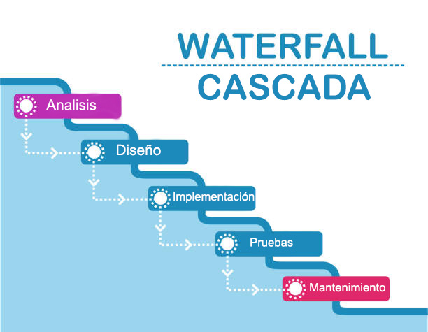

Acerca de
El modelo en cascada o waterfall model, es la propuesta de un enfoque metodológico que consiste en ordenar de forma lineal las distintas etapas que debes de seguir al momento de desarrollar tu software.
Este enfoque de cascada, originalmente fue propuesto en 1970 por Winton W. Royce, es también conocido como modelo lineal o modelo de ciclo de vida de un programa, y millones de personas lo han incorporado a sus planes en las últimas cinco décadas.
Otra de las características del modelo en cascada, es que debes de hacer un análisis y comprobación del funcionamiento de cada una de las fases al concluirlas, antes de pasar a la siguiente, detectando así los posibles errores y corrigiendolos antes de avanzar.
Si tu objetivo es hacer uso de la metodología de cascada, sin inconvenientes de por medio, es fundamental que sepas como funciona. En simples palabras, este proceso permite que puedas relacionar cada una de las etapas del modelo en cascada con la anterior, para considerar los elementos que debes quitar o añadir en la fase siguiente.
¿Cuándo usarlo?
- Cuando el proyecto tiene un objetivo final bien definido
- Cuando no hay restricciones de presupuesto ni de tiempo
Una de las fortalezas del enfoque en cascada es que permite trazar una línea clara entre el punto A y el punto B. Si no estás seguro de cuál es el punto B, probablemente sea mejor aplicar una forma iterativa de gestión de proyectos, como alguna de las metodologías ágiles.
El modelo waterfall es especialmente eficaz si el proyecto no tiene restricciones de presupuesto ni de tiempo, los miembros del equipo pueden dedicar tanto tiempo como les sea posible a la fase de diseño del sistema y a la de requerimientos.
Diagrama del modelo de cascada
Ahora paso a paso
- Análisis
- Diseño
- Implementación
- Planificación
- Verificación
- Mantenimiento
El primer paso, denominado análisis, es la etapa de preparación de tu proyecto, es decir, el punto de partida en donde vas a plasmar cada detalle de la idea y tomar el impulso necesarios para desarrollarla.
Entonces, en esta fase del modelo de cascada, tu trabajo será determinar cuáles son las necesidades y los objetivos, para luego reunir todos los requisitos que se deben cumplir en el desarrollo del software para llevar a cabo todo el proceso.
Por lo general, esta también es la fase del modelo de cascada en la que debes presentar tu propuesta del proyecto si estás trabajando para un cliente. Y, en el caso de que tengas un trabajo como freelance, no deja de ser una buena práctica realizar esta propuesta y añadirla a tu porfolio de trabajo.
No hay dudas de que el diseño representa a una de las etapas preferidas del modelo de cascada, ya que es el modelo en que te pondrás creativo y te convertirás en un arquitecto por un rato, mientras diseñas y realizas los primeros esbozos del resultado final del desarrollo de tu software. Durante esta fase del modelo de cascada, debes:
Definir la organización de la estructura y la de todos los elementos que necesitas para el desarrollo de tu software.
Describir cómo se relacionan cada uno de los elementos entre sí para que funcionen de manera correcta, teniendo siempre en cuenta el diseño de la interfaz.
Una vez que llegues a implementación, el desarrollo en cascada te exigirá realizar una traducción de todos los elementos del diseño que preparaste en la etapa previa al lenguaje de programación.
Posteriormente, tienes que integrar cada uno dentro del código y programación del software, realizando pruebas para verificar que no existan errores y dando forma poco a poco a tu producto terminado.
planificación del siguiente ciclo. Una vez concluido ya se empieza a planificar el siguiente ciclo. Por una parte, en forma de avance normal del proyecto, si los objetivos de un ciclo se han podido cumplir y se debe definir el siguiente objetivo. Por otra parte, también se puede tratar de encontrar soluciones, en caso de que la etapa de desarrollo anterior haya fracasado. En este caso, la estrategia seguida hasta entonces se puede sustituir, por ejemplo, con las alternativas definidas anteriormente o con una nueva alternativa. De esta forma, se puede intentar conseguir de nuevo el objetivo del mercado.
Durante la cuarta fase del modelo de cascada debes probar y ejecutar el código final y verificar su funcionamiento. Aquí también es necesario que compares tus resultados del cierre con los objetivos iniciales y compruebes si cumpliste con cada uno de ellos.
Por otro lado, te recordamos que realices pruebas de cada unos de los elementos que hayas utilizado y que tomes en cuenta los comentarios que recibas si realizas alguna encuesta o presentas el resultado ante tu cliente, luego completar el trabajo en cascada.
Finalmente, una vez que ingreses en la quinta y última fase del modelo de cascada, es momento de analizar los resultados del paso anterior y realizar los cambios pertinentes (si es que son necesarios), para dar por concluido el proyecto.
Ventajas
- Te ayuda a llevar un orden y organizar tu trabajo.
- Es muy útil si no tienes demasiada experiencia.
- Funciona de manera óptima en la mayoría de los dispositivos.
- Es sencillo y fácil de seguir.
- Te brinda las herramientas necesarias para tener claridad en tus objetivos desde el comienzo del proyecto.
- Al encontrar un problema, ofrece la oportunidad de detectar la fase del modelo en cascada en la que surgió y así arreglarlo lo más rápido. posible.
Desventajas
- Si estás realizando un proyecto grande o muy complejo, puede que sea más difícil dividirlo en fases ordenadas, por lo que este sistema puede no ser el más adecuado.
- Debido a la forma de trabajo lineal, tienes menos tiempo para concluir cada una de las fases del modelo en cascada.
- No puedes pasar a la etapa siguiente hasta que completes la anterior.
- En ocasiones, los fallos no se detectan hasta la última fase del desarrollo, por lo que, para resolverlo tendrás que regresar a las fases anteriores y repetirlas o modificarlas.
El modelo en cascada es uno de los modelos de proceso más conocidos en el desarrollo de software. Se ha utilizado con éxito durante décadas, pero ahora sólo se utiliza para proyectos más pequeños en los que las especificaciones son claras. Sin embargo, también llevaron a los analistas y desarrolladores a diseñar modelos alternativos llamados desarrollo ágil de software.
El principal problema del modelo en cascada es que los cambios y revisiones no están necesariamente previstos por las secuencias lógicas.
La retroalimentación de los clientes, testers o probadores e ingenieros durante el desarrollo, está en parte ausente, y la integración del software en un sistema existente tiene lugar en un big bang
Estos inconvenientes pueden evitarse modificando las fases del proyecto, como es el caso del Modelo en Espiral. Pero desde hace algunos años, los métodos ágiles que utilizan otros elementos estructurales son mucho más populares. Por regla general, son más económicos, conducen a resultados más rápidos y son más transparentes para los clientes.
¡Continúa con espiral!
Aprende sobre el siguiente modelo
Continuar